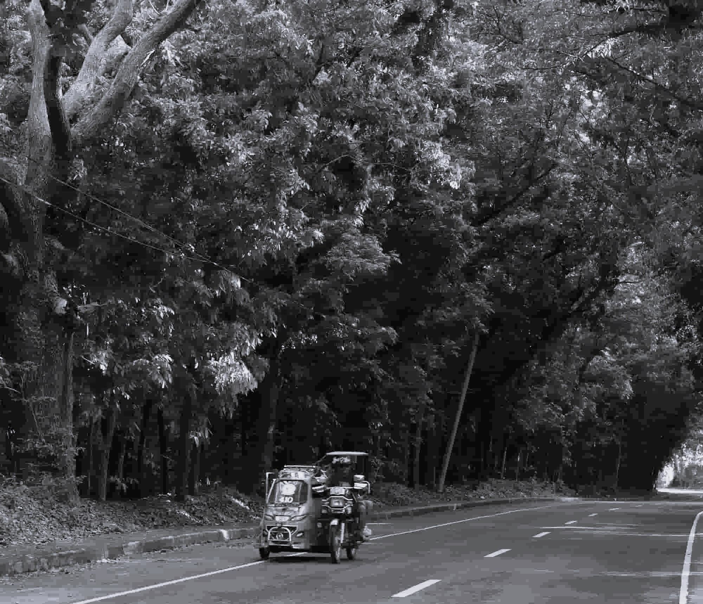

Business Networking Event
Join local business owners for an evening of networking.
September 25, 2026

Join local business owners for an evening of networking.
September 25, 2026
Learn strategies for growing your local business.
October 2, 2026
Temperature: